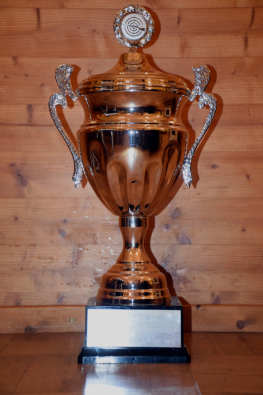

Herzlich Willkommen bei der
Schützengesellschaft Eintracht Halfing
gegr. 1872 e.V.
Über Uns
Mitmachen
Sie finden uns in der "Heinrich-Beslmeisl-Halle" in der Holzhamer Straße 6. Über den Seiteneingang im Angerweg kommen Sie über die Treppe in den Keller zu uns.
Von Oktober bis Ostern schießen wir regelmäßig Freitags.
- Schüler und Jugendliche ab 17:30 Uhr
- Schützen ab 19:00 Uhr
Neulinge und solche, die es werden wollen, sind immer Willkommen
Vorstand
Paul Anner jun.
1. Schützenmeister
Christa Schuster
2. Schützenmeister
Corinna Hillbrecht
1. Kassier
Claus Kaulisch
2. Kassier / Beisitzer
Doris Beyer
SChriftführer
Thomas Anner
Sportleiter
Benedikt Leitgeb
Fähnrich
Josef Lipp
Zeugwart
Marc Beyer
Jugendleiter
Christa Schuster
Damenleiterin
Sepp Schuster sen.
Ehrenschützenmeister
Hans Aicher
Ehrenschützenmeister
Vereinsfoto
Aufgenommen anlässlich der 50 jährigen Fahnenweihe im Jahr 2017
Freunde und Bekannte
Aktuelles
66. Luftgewehr-Gauschießen des Chiemgau Prien und Paul Anner-Gedächtnisschießen der Schützengesellschaft "Eintracht Halfing" gegr. 1872 e. V.
Das Gauschießen geht weiter.
Die Halfinger Schützen freuen sich nun endlich, nach den ganzen Problemen, die durch die Coronaverordnung die Weiterführung des Gauschießens verhindert hat, das 66. Luftgewehr-Gauschießen
vom 20. bis 30.Oktober
in unserem Schießstand durchführen zu können. Wir freuen uns auf Ihren Besuch und wünschen allen Teilnehmern
"Gut Schuß"
Schießergebnisse des letzten Vereinsabends


Sportliches
Halfinger Dorfmeisterschaft im Schießen
Corona bedingt ist die Dorfmeisterschaft im Jahr 2020 und auch 2021 leider ausgefallen. Es geht wieder aufwärts und wir hoffen auf ein baldiges Wiedersehen. (CK)
Zur Vorfreude! Wenigstens schon mal ein Bild vom Wanderpokal.
Die Könige 2020 stehen fest
Nachdem uns in der Saison 2019/20 Corona einen dicken Strich durch das Schützenjahr gemacht hatte, konnten wir zu Beginn der neuen Saison unser End- und Königschießen doch noch durchführen. Durch die Einschränkungen leider in etwas veränderter Form jedoch nicht ohne den nötigen Wettkampfeifer wurden an den ersten beiden Schießabenden der neuen Saison die Vereinsmeister, der Wanderpokal und die Schützenkönige ausgeschossen.
Nach dem Schüler und Jugendtraining wurde in kleinem Rahmen die Siegerehrung des Jugendkönigs und des Jugendvereinsmeisters vorgenommen.
Vereinsmeister wurde bei den Schüler- Jugend- und Juniorenschützen Jan Alexander Beyer mit 97 Ringen.
Jugendkönig bei den Schüler- Jugend und Juniorenklassen wurde Manuel Richer mit einem 129,2 Teiler, dem jedoch Jan Alexander Beyer (132,3T) und Leijla Omicevic (133,3T) mit sehr geringen Abstand auf den Versen waren.
Im Rahmen unseres Sommerfestes wurde die Siegerehrung im kleinen Rahmen durchgeführt.
Vereinsmeister in den Schützenklassen mit Gewehr wurde Thomas Anner mit 99/98 Ringen. Bei den Auflageschützen wurde Meinrad Reichruber Vereinsmeister mit 100 und 100 Ringen. Mit der Pistole gewann Thomas Anner mit 93/ 92/ 91/ 90 Ringen vor seinem Bruder Paul erst in der 4. Deckserie mit einem Ring Unterschied den Vereinsmeistertitel.
Den Wanderpokal darf für eine Saison Hans Aicher sein Eigen nennen. Er erzielte nach DSB-Wertung mit 54,5 Punkten, 94 Ringen und einem 48,5 Teiler, der mit Faktor für Auflage gewertet wurde, das beste Ergebnis gefolgt von Klaus Werner mit 57,3 Punkte, 94 Ringe und einem 51,3 Teiler ohne Faktor.
Nach Nennung durch 1. Schützenmeister Paul Anner dürfen die Schützen mit Gewehr und Pistole in der laufenden Saison Ihren Königinnen huldigen. Bei den Gewehrschützen geht die Königswürde an Doris Beyer mit einem 73,2 Teiler gefolgt von Heiner Kussmann (87,7T) und Sepp Schuster jun. (92,1T).
Die Königskette der Pistolenschützen darf für diese Saison Corinna-Maria Hillbrecht tragen. Sie hatte mit einem 113,8 Teiler vor Marc Beyer (127,0) und Paul Anner (168,7T) die ruhigste Hand. (CK)
Impressum
Schützengesellschaft Eintracht Halfing gegr. 1872 e.V.
Holzhamer Str. 28
83128 Halfing
Gemeinschaftlich vertretungsberechtigt:
1. Vorstand:
Paul Anner
Holzhamer Str. 28
83128 Halfing
Tel: +49 8055 904657
2. Vorstand:
Christa Schuster
Gunzenham 10
83128 Halfing
Tel: +49 8055 646
Registergericht: Amtsgericht Traunstein
Registernummer: VR 40640
Umsatzsteuer-Identifikationsnummer:
V.i.S.d § 18 Abs. 2 MStV
Paul Anner
Holzhamer Str. 28
83128 Halfing
Webdesign
Sieghard Hillbrecht
Blumenweg 1
83093 Bad Endorf
E-Mail:hillbrecht.s@gmail.com